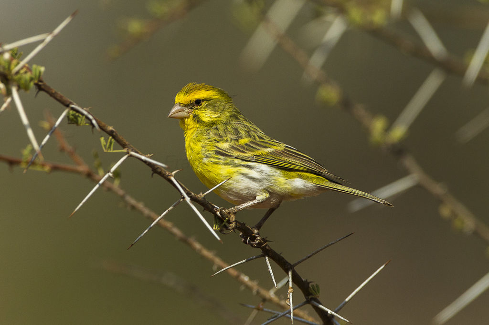

Fehérhasú csicsörke
A fehérhasú csicsörke vagy fehérhasú kanáricsíz (Crithagra dorsostriata), korábban (Serinus dorsostriatus) a madarak osztályának a verébalakúak (Passeriformes) rendjébe és a pintyfélék (Fringillidae) családjába tartozó faj.
Előfordulása
Délkelet-Etiópia, Délkelet-Szudán, Kelet-Uganda, Kenya, Észak-Tanzánia területén honos. A száraz, nyílt térségek madara, kedveli a sűrű bozótosokat, ám előfordul fás területek tisztásain is.
Alfajai
Serinus dorsostriatus dorsostriatus
délkelet-Uganda, nyugat-Kenya és északnyugat-Tanzánia; törzsalak hímjének hasi régiójában alig találni fehéres területet, gyakran csak a comb fehér
Serinus dorsostriatus maculicollis
Etiópia, Szomália, Kenya középső és keleti része és északkelet-Tanzánia; mindkét ivar hasa egyértelműen fehér.
Megjelenése
A hím fejoldala olivzöld, a fejtető és a nyak felső része szürkészöld. A homlok, a szem alatti terület - melyet sötétebb stráfozás keretez - a torok, a mell, a testoldalak is sárgák.
A hát sötét olívszínű, sötétbarnán stráfozott. A has fehér. A farktollak és a szárnyak feketés barnák. A tojó torka világos sárga, a szemsávja sötét feketés. A felső teste sötéten sávozott, a mellen és a testoldalon is sötét foltozás, pettyezettség látszik. A farcsík halvány sárga. A fiatalok a tojóra hasonlítanak, ám sokkal erősebben stráfozottak.
Rokon fajai
A faj nagyon hasonlít a sárgahasú csicsörkéhez (Crithagra flaviventris), ám annak hasa nem fehér, hanem sárga. Még egy igen hasonló fajt érdemes megemlítenünk, ez a Brimston-csicsörke (Crithagra sulphurata). E faj szintén összetéveszthető a két említett csicsörkefélével, hasalja szintén sárga, akárcsak a sárgahasú csicsörkének, ám felső testtollazata nem sárga, hanem sötétebb sárgás zöld.
Szaporodása
Fészekalja 3-4 tojásból áll, a kotlási idő kb. 13 nap. A frissen kelt fiókák színe csaknem teljesen fekete, sötét pihékkel. A fiatalok 19-21 napos korukban repülnek ki a fészekből, a szülők még kb. 10-14 napig etetik őket. Évente 2-3 költése is lehetséges. E fajt Európában díszmadárként tartják.
Fehérhasú csicsörke
Természetvédelmi státusz
Nem fenyegetett
Rendszertani besorolás
| Ország: | Állatok (Animalia) |
| Törzs: | Gerinchúrosok (Chordata) |
| Altörzs: | Gerincesek (Vertebrata) |
| Osztály: | Madarak (Aves) |
| Rend: | Verébalakúak (Passeriformes) |
| Család: | Pintyfélék (Fringillidae) |
| Alcsalád: | Kúpcsőrűek (Carduelinae) |
| Nem: | Crithagra |
| Faj: | C. dorsostriata |
Tudományos név
Crithagra dorsostriata
Reichenow, 1887
Szinonimák
Fehérhasú kanáricsíz